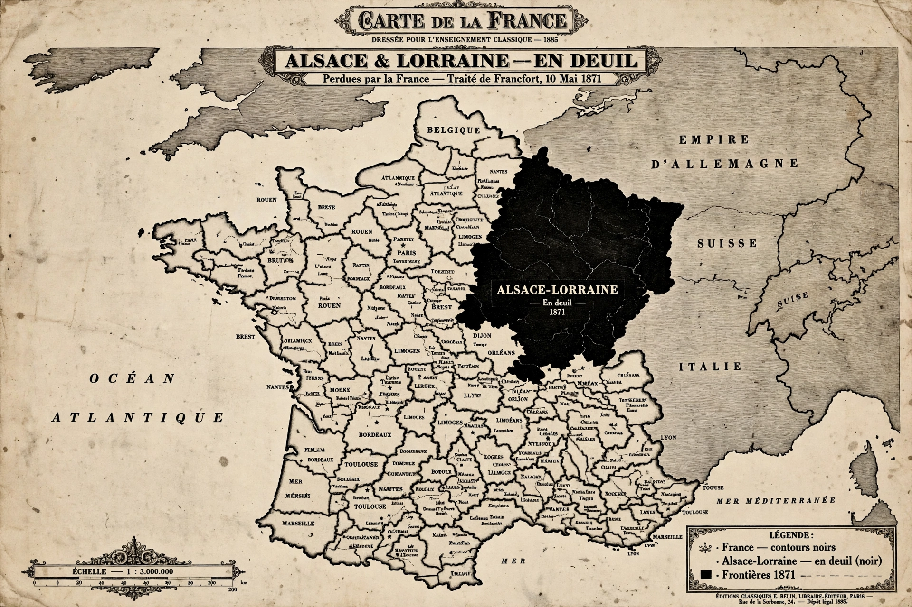

Revanchism in France

Revanchism (from French revanche, "revenge") in France refers to the political movement and national sentiment, influential from the 1870s to 1914, that sought to reverse the territorial losses of the Franco-Prussian War (1870–71) — above all the recovery of Alsace-Lorraine, annexed by the new German Empire under the Treaty of Frankfurt (1871). The term has since been generalised to describe any policy aimed at reversing territorial or political losses.
Origins
France's rapid defeat in 1870–71, the proclamation of the German Empire at Versailles, and the annexation of most of Alsace and northern Lorraine were enduring humiliations for the French Third Republic. The deputies of the annexed territories protested at Bordeaux in 1871. Alsace-Lorraine was depicted in French public culture as a widow in mourning: the statue of Strasbourg on the Place de la Concorde in Paris was draped in black crepe and covered with wreaths until 1918. School textbooks taught children about the "blue line of the Vosges" and the duty to remember — summed up in the injunction attributed to Léon Gambetta: "Think of it always, speak of it never" (Pensez-y toujours, n'en parlez jamais).
The revanchist movement
Revanchism found champions in the Ligue des Patriotes, founded in 1882 by Paul Déroulède, and surged during the Boulanger affair (1886–89), when the popular general Georges Boulanger — "Général Revanche" — seemed poised to lead France against Germany. Governments of the Republic, however, usually treated revanche cautiously: leaders such as Jules Ferry directed expansion toward colonial empire instead, and military planning concentrated on defensive preparedness. Still, the idea structured alliances: the Franco-Russian Alliance (1892) and ultimately the Entente Cordiale (1904) encircled Germany, and French war planning in 1914 (Plan XVII) opened with offensives into Alsace-Lorraine.
Decline and afterlife
Alsace-Lorraine returned to France after Germany's defeat in the First World War, under the Treaty of Versailles (1919), removing revanchism's object — though the word lived on, ironically applied to German revisionism in the interwar period. Historians debate how deeply revanchism motivated French policy: while pervasive in education, monuments and popular culture, most republican governments avoided openly demanding war for the provinces, and by the 1900s colonial and European rivalries competed for attention. The episode remains a classic case study of irredentism and national memory.